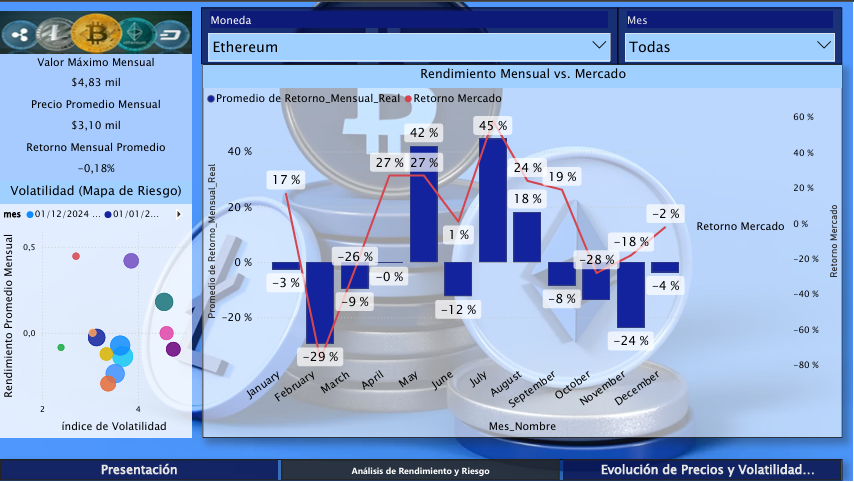
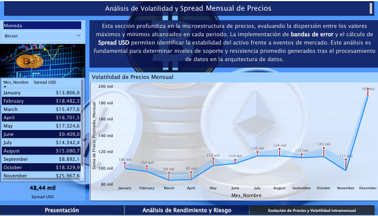
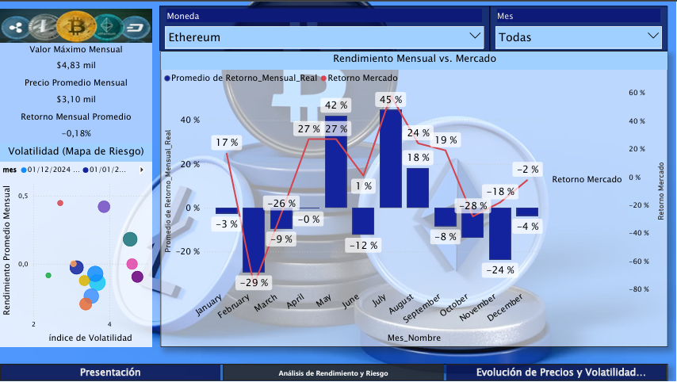
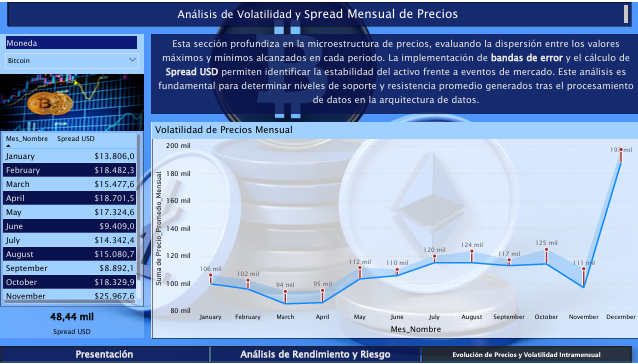

Crypto Analytics 2025

01. El Problema: Ruido vs. Señal
En los mercados financieros, el exceso de información suele ser el mayor enemigo de la rentabilidad. Este proyecto nació para responder una pregunta estratégica: ¿Es posible validar la autenticidad de un movimiento de mercado antes de ejecutar una posición?
Diseñé un ecosistema capaz de procesar datos históricos masivos, limpiarlos mediante ingeniería de precisión y proyectar resultados basados en evidencia estadística.
02. Ingeniería de Datos (Arquitectura Medallion)
Utilicé Microsoft Fabric para orquestar un pipeline de datos resiliente, asegurando que la información fuera refinada progresivamente.

CAPA_BRONZE
Ingesta híbrida mediante Dataflows Gen2 y PySpark. Captura de datos crudos sin alteración de integridad.
CAPA_GOLD
Modelado semántico optimizado para BI y consumo de ML. Aquí el dato se convierte en valor de negocio.

03. Inteligencia de Negocio y Validación
El análisis visual se estructuró en tres capas críticas: Estado del Mercado, Validación de Tendencias (Volumen vs. Precio) y Performance Histórico.
 



Insight Clave: Al cruzar el volumen promedio con la volatilidad, logramos identificar anomalías donde el precio subía sin respaldo de liquidez, permitiendo al inversor evitar "trampas" de mercado.
04. Ciencia de Datos: Predicción
Entrené un modelo de Regresión Lineal para proyectar el precio de cierre mensual. El resultado fue una convergencia estadística con un $R^2$ de 0.9863.

En el gráfico superior (Caso Bitcoin), se observa cómo la regresión "viaja" a través de las dimensiones de volatilidad y precio inicial para encontrar el punto de equilibrio. Esta herramienta transforma la especulación en un cálculo de probabilidades fundamentado.
¿Desea probar el simulador?
He desplegado una versión interactiva del modelo en Streamlit para experimentación en tiempo real.
[ EJECUTAR_SIMULACIÓN_LIVE ]